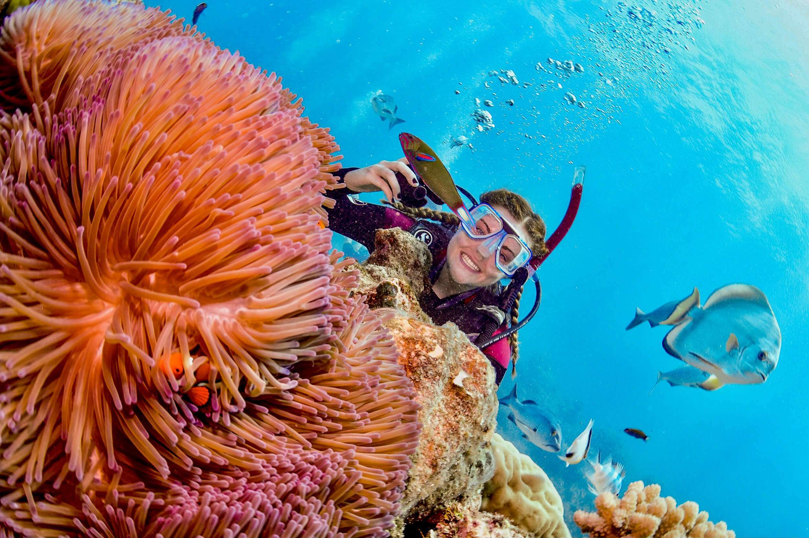
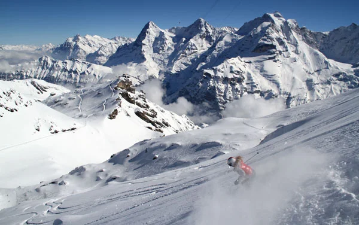

Diving into the crystal-clear waters of the Great Barrier Reef was like stepping into a different world. The vibrant coral formations, teeming with colorful marine life, created an otherworldly spectacle. As I explored the hidden treasures of this underwater paradise, I couldn't help but be awestruck by the sheer beauty and diversity of this marine ecosystem.

Diving near reef is incredible!
Alpine Bliss: Skiing in the Swiss Alps
Gliding down the pristine slopes of the Swiss Alps was an exhilarating experience. The crisp mountain air, snow-covered peaks, and the thrill of skiing through breathtaking landscapes made this adventure truly unforgettable. Whether you're a seasoned skier or a beginner, the Swiss Alps offer a perfect blend of natural beauty and winter sports excitement.

Skiing in the Swiss Alps
Desert Trails: Mountain Biking in Moab, Utah
Moab's desert terrain provided a surreal backdrop for an adventurous mountain biking journey. The red rock formations, deep canyons, and challenging trails offered an adrenaline rush like no other. Riding through this rugged landscape, you'll feel like you're exploring an alien planet, where every turn reveals a new, awe-inspiring vista.
Mountain Biking in Moab, Utah
River Thrills: Whitewater Kayaking in New Zealand
Kayaking through the roaring rivers of New Zealand was a heart-pounding adventure. The crystal-clear waters, surrounded by lush greenery and imposing cliffs, provided the perfect setting for this adrenaline-pumping experience. Navigating the whitewater rapids and immersing myself in the stunning natural beauty of New Zealand was an adventure of a lifetime.